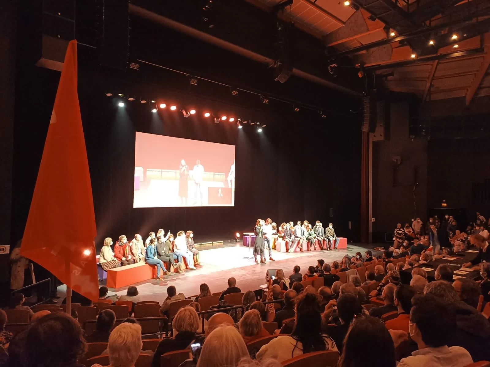
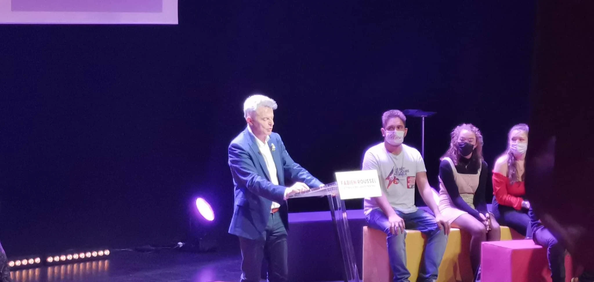
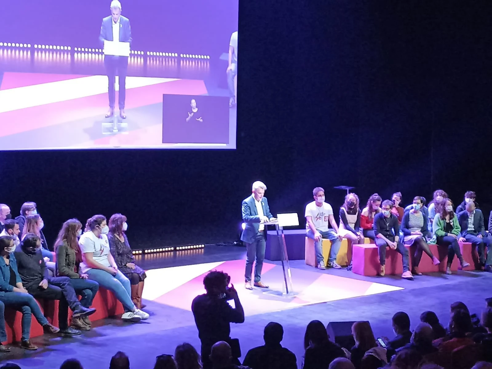
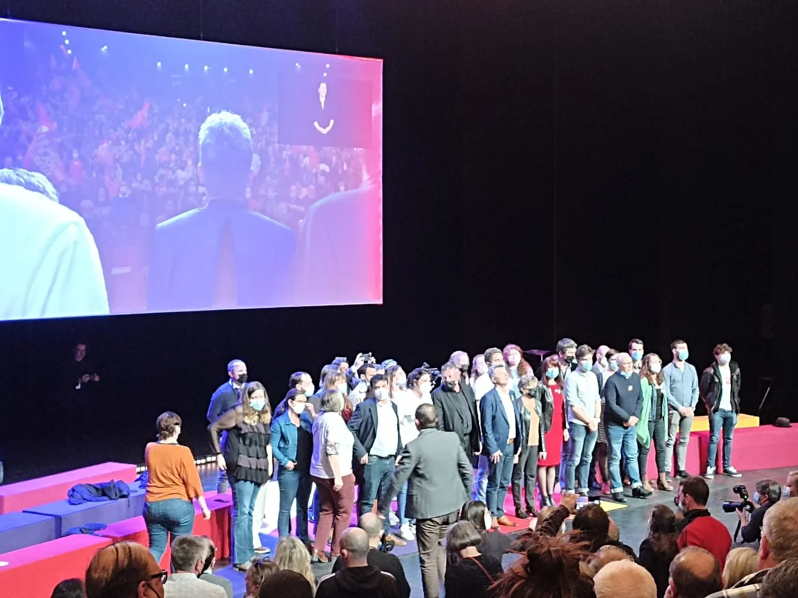

Compte rendu fédéral
À Mérignac, des communistes des Deux-Sèvres au meeting de Fabien Roussel
Date indiquée par Facebook · 2 mars 2022
Repères éditoriaux
Des militants des Deux-Sèvres ont pris part au meeting du 1er mars au Pin Galant à Mérignac. Les photographies accompagnent le compte rendu de la fédération.
Texte conservé avec la publication
Meeting de Fabien Roussel à Mérignac, pour des Jours Heureux.
3000 personnes, dont des militants Deux-Sévriens, ont fait le déplacement vers la salle du Pin Galant à Mérignac le mardi 1er mars pour assister au meeting de Fabien Roussel. Tous ne pourront pas entrer dans l'Auditorium puisque la salle est comble. Plus de 200 personnes seront obligées de suivre la soirée depuis des écrans installés dehors.
Fabien Roussel commencera le meeting en évoquant la guerre que fait la Russie à l'Ukraine, demandera une "condamnation internationale unanime de cette agression" et plaidera pour l'accueil "des réfugiés ukrainiens mais aussi de tous ceux et celles qui fuient la guerre."
Puis comme prévu, ce meeting bordelais sera dédié à la révolution féministe. Les femmes sont les premières à subir les conséquences directes du capitalisme et du patriarcat. Des conséquences mortelles. Il a porté pas moins de 25 propositions féministes. Voilà pourquoi le programme des « Jours heureux » est un programme pour l'égalité femmes hommes.
L'égalité comme condition du bonheur.




Sources
Archive rouge · export Facebook · AR-0002-FB-01940
À lire aussi · Fabien Roussel à Marseille. Redistribuer pour vivre et financer les services publics · Le lien d’origine